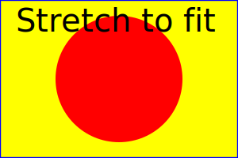
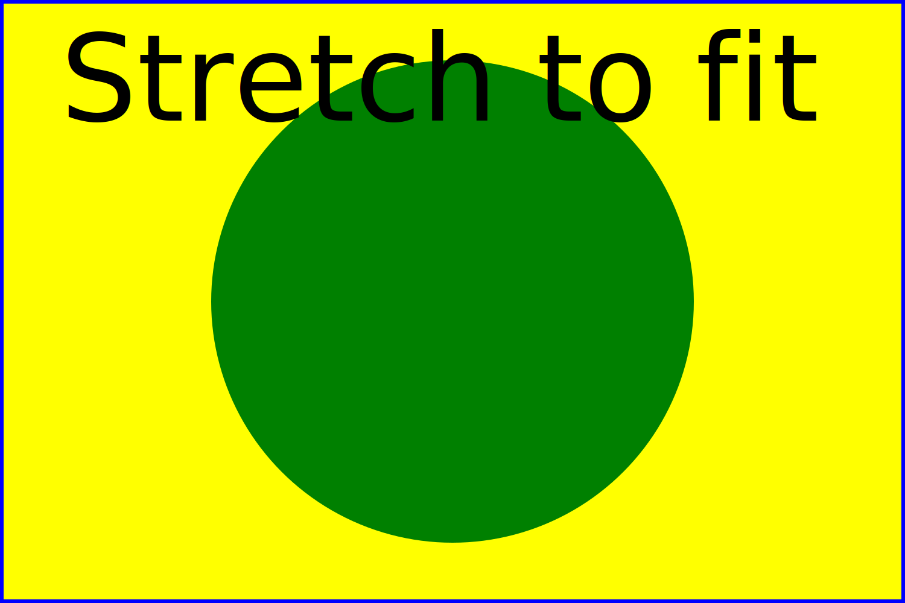

These examples are provided in order to show that having an SVG image in an BitMap graphical element makes sense regardless of the presence of sizing-related attributes.
In these HTML examples, the <img> tag serves the same role as the BitMap in Modelica. That the BitMap has a mandatory extent corresponds to using an <img> tag with width and height specified. The examples where the <img> tag doesn't have width and height are provided to illustrate that a Modelica tool could help the user selecting an extent matching the intrinsic size of an SVG image in these cases.
Because of the viewBox, the content is scaled to fit the extent of the <img> tag. The coordinate system is unrelated to width and height, which only serve as a way of defining the intrinsic size. Overriding the intrinsic size with a small square box:

Not specifying the extent of the <img> tag lets the intrinsic size come into play:
As long as there is a viewBox, removing the width and height has no effect on the coordinate systems:

Without the viewBox, the width and height define the visible part of the SVG canvas, and the visible part is mapped to the extend of the <img> tag:
Not specifying the extent of the <img> tag lets the intrinsic size come into play:
The SVG canvas is painted without transformation, and the extent of <img> tag determines the visible part of the canvas. As our circle in the SVG image is centered at (750, 500) pixels, with a radius of 400 pixels, we need a big <img> tag in order to see something: